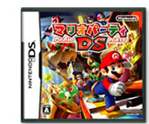
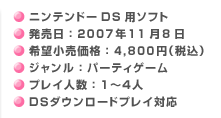
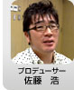
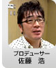

|
||
|  |  |
|
![ディレクター[中田伸一さん]](img/hudson_photo3.jpg)
![プログラマー[西本英樹さん]](img/hudson_photo4.jpg) 
![アソシエイトプロデューサー[廣瀬美由貴]](img/nintendo_photo3.jpg)
| いままで据置型のイメージが強かった「マリオパーティ」をニンテンドーＤＳという操作方法も遊び方も違うハードに持ち込むことにいろいろな苦労があったのではないかと思いますがいかがでしょうか。 |
| 佐藤： | 『マリオパーティＤＳ』は開発中にいくつか転換点がありました。簡単に言うと最初は“ＤＳならでは”という形でスタートしました。でも「ＤＳだから、こんなんです」なんて言い訳は通用しないはずだということで、最終的にはシリーズの王道を行く最新作にしようと決意したわけです。 えーと、この辺、菊池さん、中田さん、面白く話してください（笑）。 |
|
| 中田： | いやー、面白いかどうかは自信がないんですけど（笑）、たしかに最初のコンセプトは「ＤＳならでは」ということで進めていて、そこに特化しすぎましたね。 開発の最初の頃は、“ＤＳで一緒に通信プレイを楽しみながらそれぞれの画面で別々のことが起こる”ような形を試していたんです。簡単に言うとトランプのババ抜きみたいな感覚を「マリオパーティ」で、と思っていました。 これが……まあ、大変なことになるんです。 |
| お話を聞いていると新鮮な面白さが体験できるような気もしますが。 |
| 中田： | じつは、それを目指したばっかりに開発の途中で（悪い意味で）“大人なゲーム”になってしまったんです。お互いに相手が何をやっているかがわからないという状況でのプレイヤー同士の駆け引きがメインになったせいか、なんか、いやらしい「マリオパーティ」に（笑）。同時期に『マリオパーティ８』の開発にも関わっていて、そこで「マリオパーティ」って、やっぱりコレが楽しいんだよ、“（複雑な駆け引きなしで）みんなで一緒にワイワイ楽しめる”のが原点だよな、と改めて感じたわけです。 |
| 菊池： | 私も面白いことはしゃべれないのですが（笑）、本来、気軽に楽しくワイワイ遊べるのが「マリオパーティ」のいいところです。また１人でも十分楽しめるのが「マリオパーティ」だと思っています。それが、開発の最初の頃はそうではなかった。周囲でも「これは「マリオパーティ」じゃない」という意見が集まってきて。 |
| 佐藤： | やっぱり僕らも最初は、「テレビで遊ぶ「マリオパーティ」を作ってきたので、テレビで遊ぶのとは違う方がお客さんが喜ぶだろう」と思っていました。まずはニンテンドーＤＳの特徴を生かそうとして、１人ずつ別画面でということを重視すべきと考えたわけです。 でも、最初に作ったものは……押し売りでしたね（笑）。企画書の押し売りになってしまったと思います。 |
| 中田： | ＤＳでの開発ということでタッチペンと１人１つのマイク、いままでの据え置きにはない操作方法ということでアイデアはいっぱい出たんですけど、それとは別にやはり見た目を変えたいということもあって自分視点の画面とかを試しました。あれも失敗でした（笑）。 |
| 佐藤： | 自分だけの画面を見ていることが、なんで失敗かわかりますか？画面を見るとメチャクチャ寂しいんです。自分しかいないわけだから。あるいは自分すら見えない場合もある。 |
| 中田： | それは「マリオパーティ」としてはすごく寂しくて。 それと、目に見えない駆け引きを楽しめるのって大人だけなんですよ。そのためミニゲームがすごく難しくなってしまった。 |